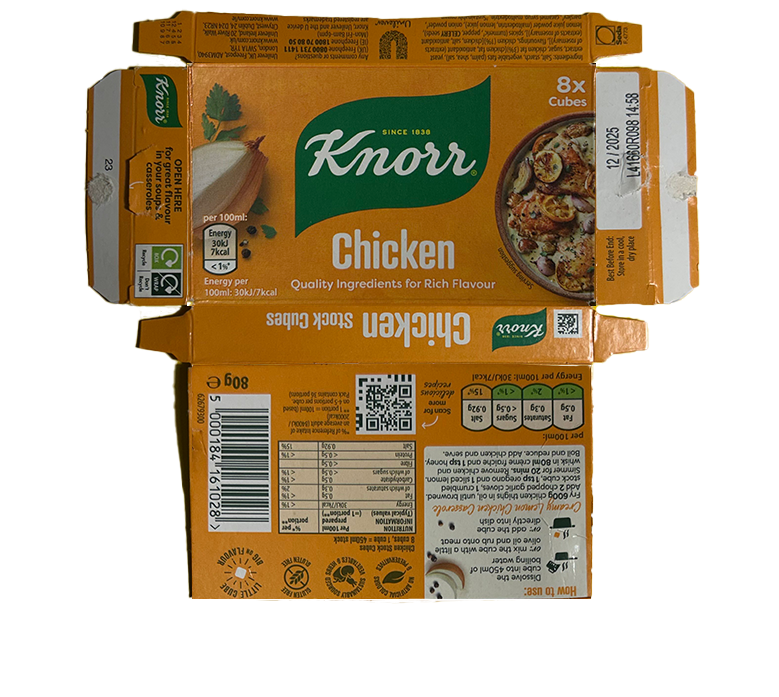
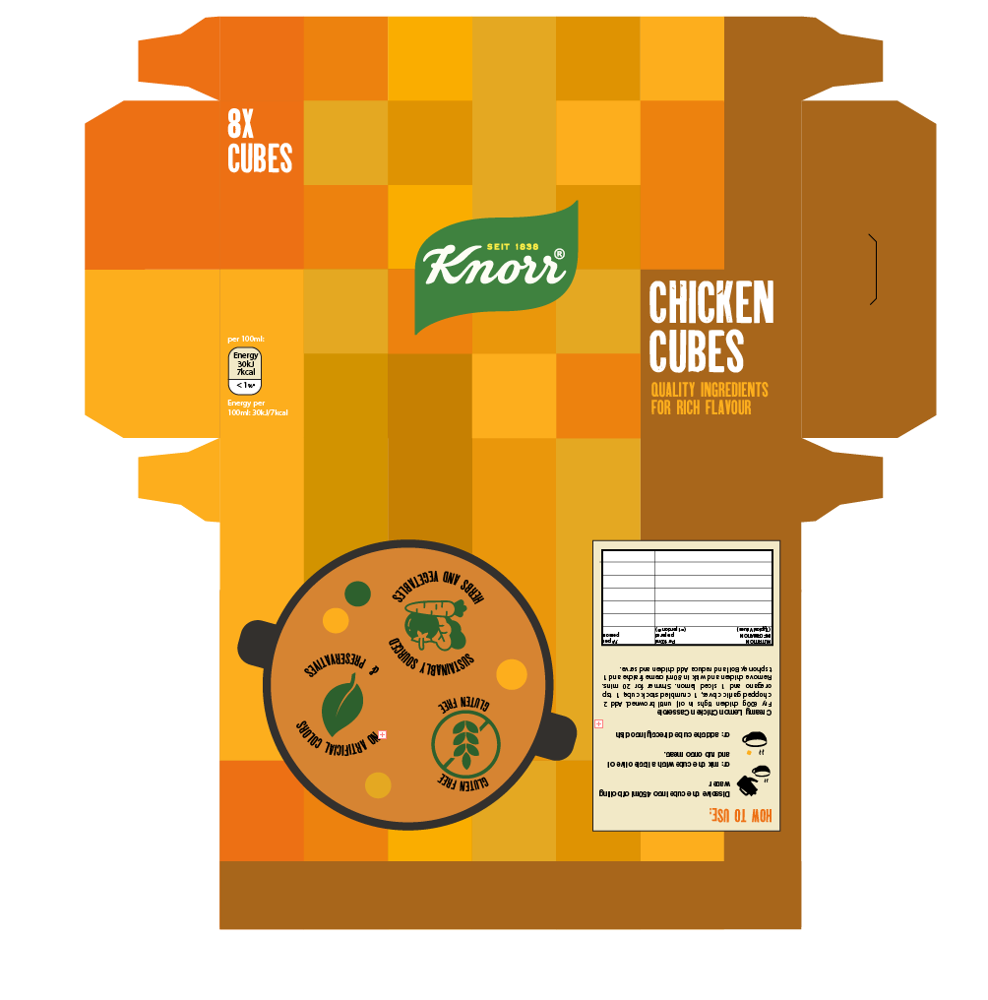

Revamp of the Knorr Package
As part of a school assignment, we were asked to identify a product from everyday life whose
packaging
could benefit from a redesign. I chose the Knorr packaging, as I believe its current design feels
outdated when compared to contemporary design trends. A refreshed visual identity could enhance its
appeal, particularly among younger consumers, while maintaining the brand’s recognizability and
heritage. In addition, I believe the conventional approach of featuring a straightforward image of
the
food accompanied by basic text has become repetitive and uninspired in packaging design. This
stereotypical style often lacks creativity and emotional engagement. I think it's time to challenge
this
norm by introducing more playful, abstract, or conceptual visuals that can evoke curiosity and stand
out
on the shelf. Such approaches can make the product more visually striking and reflective of modern
design sensibilities.
I explored several concepts for this redesign, but the idea that resonated with me the most was
rooted
in a very organic and sensory-driven approach. I asked myself: why not visually represent the
product
using the product itself? No need of imagery. My concept was to cover the packaging in a grid-like
pattern of chicken
cubes—stylized to resemble the actual product. To make this visually engaging and dynamic, I varied
the
tones slightly between the cubes, using warmer and cooler shades of brown to create subtle contrast
and
texture.
As to one Knorr customer, I believe that the visual association with the product can evoke a sense
of taste with the help of it's colour.
The familiar colors and appearance of the chicken cubes can trigger a sensory connection,
reinforcing
the idea that packaging should not only be seen but also felt sensorially. In this case,
it's about connecting sight with taste, creating a visual flavor experience.


